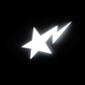

01
Tanıtım siteleri
Marka ve ürün sayfaları; statik çıktı, hızlı açılış, yerel varlıklar.
WEB SİSTEMLERİ · TASARIM
Tanıtım siteleri, panel arayüzleri ve ortak tema bileşenleri; tek bir tasarım sisteminden üretilir.
Tanıtım, yönetim ve yayın aynı tasarım dilini paylaşır.
Marka ve ürün sayfaları; statik çıktı, hızlı açılış, yerel varlıklar.
React tabanlı yönetim ekranları; liste, durum ve form akışları.
Ortak tokenlar, tipografi ve bileşenler; markalar arası tutarlılık.
Wasmer Edge üzerinde statik yayın; içerik ve sürüm güncellemesi.
Her site kendi rengi, tipografik vurgusu ve içerik ritmiyle ayrışır; omurgada aynı erişilebilirlik ve performans kuralları kalır.
Bu sayfa da aynı sistemle üretildi: yerel fontlar, statik HTML ve harici bağımlılık yok.
Dört adım, tek çıktı: bakımı kolay bir site.
Sayfa yapısı, içerik ve marka kararları netleşir.
Tokenlar, tipografi ve bileşenler markaya göre kurulur.
Statik çıktı üretilir; erişilebilirlik ve performans kontrol edilir.
Site Wasmer Edge’e alınır; canlı adres doğrulanır.
Site Sys ortak bir omurga kurar; marka rengi, tipografik vurgu ve içerik her markaya göre değişir. Bu sayfa ödeme almaz ve hiçbir harici betik yüklemez.
Yedi marka, tek çatı. Her biri kendi kimliğiyle yayında.
 EZWIN CorporationÇatı markası
EZWIN CorporationÇatı markası
 EzWin FiveMFiveM kaynak paketleri
EzWin FiveMFiveM kaynak paketleri
 EzWin Hesap HizmetleriHesap ve erişim hizmetleri
EzWin Hesap HizmetleriHesap ve erişim hizmetleri

EzWin Site SysSite ve panel sistemleri EzWin TemplateRoblox şablonları
EzWin TemplateRoblox şablonları
 EzWin UncopylockedUncopylocked sahneler
EzWin UncopylockedUncopylocked sahneler
 EzWinCheatLuau test laboratuvarı
EzWin PortfolyoTüm işler ve projeler
EzWinCheatLuau test laboratuvarı
EzWin PortfolyoTüm işler ve projeler
Mevcut sitenizi yenileyebilir veya sıfırdan bir sistem kurabiliriz.